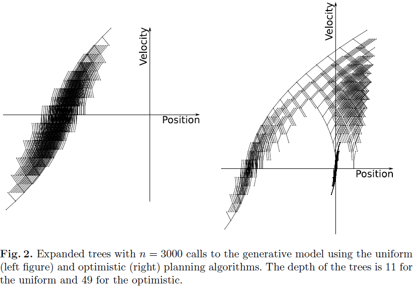

PLANNING with OPTIMISM
Odalric-Ambrym Maillard
HORIBA
June 16, 2025

Roadmap
- Planning problem
- Deterministic case
- Open loop
- Optimism
- Uniform planning
- Optimistic planning
- Guarantees
The Planning Challenge
Real-World Scenario
- You have a deterministic system (robotics, game AI, resource allocation)
- You need to make decisions quickly (limited CPU time/memory)
- You want the best possible performance given your constraints

Planning problem
If at time \(t\in\Nat\), the system is in state \(x_t\in\cX\), and action \(a\in\cA\) is choosen,
it jumps to the state \(x_{t+1} = f(x_t,a_t) \) and reward \(r(x_t,a_t)\in[0,1]\) is received.
Assume everything is
You can
The value of a policy \(\pi:\cX\to\cA\) starting from \(x_0\) is
\(V^\pi(x_0)= \sum\limits_{t\geq0}\gamma^t r(x_t,\pi(x_t))\).
The Q-value of a policy \(\pi:\cX\to\cA\) starting from \(x_0,a_0\) is
\(Q^\pi(x_0,a_0)= r(x_0,a_0)+\sum\limits_{t\geq1}\gamma^t r(x_t,\pi(x_t))\).
Given any \(x_0\), we want to find an action \(a_0\)
using as
Example
\(x = (y,v)\in\Real^2\): represents position and velocity of a ball.
\(a\in\{-1,1\}\): acceleration, two values here.
\(f(x,a)=(y+0.1v,v+0.1a)\): moves to novel position and velocity
\(r(x,a)=\max(1-y^2,0)\): goal is to reach position 1.
Look-ahead tree construction
- Root: Current state
- Branches: Possible actions (K branches per node)
- Structure: \(\mathcal{S}_n\) set of leaf nodes, \(\cC_i\) set of children of node \(i\),
- Depth: Planning horizon
- Size: Exponential growth (K^d nodes at depth d)
corresponding to a path \((x_0,a_0,x_1,a_1,\dots,x_{d-1},a_{d-1})\) from the root,
we let \(u_i = \sum\limits_{t=0}^{d-1}\gamma^t r(x_t,a_t) \) and \(b_i = u_i + \frac{\gamma^d}{1-\gamma}R_{\text{max}}\)
For anwe let \(u_i= \max\limits_{j\in\cC_i}u_j\) and \(b_i = \max\limits_{j\in\cC_i}b_j\)
First approach: Uniform planning
Optimism in the Face of Uncertainty
Let \(v_i\) denote maximal value of all paths going through node i, then:
\(u_i \leq v_i \leq b_i\)
Strategy
- Maintain upper confidence bounds
- Always explore the most optimistic node
- Focus resources on potentially optimal paths
Upper bounds tighten as we explore, naturally eliminating suboptimal regions.
Improved approach: Optimistic planning
Step 1: Initialize
Create root node with current state, compute initial upper bounds
Step 2: Select
Choose unexpanded node with highest upper bound
Step 3: Expand
Generate all K children, compute rewards and transitions
Step 4: Update
Propagate bounds upward from expanded node to root
Step 5: Repeat
Continue until computational budget \(n\) is exhausted
Step 6: Decide
Select action corresponding to best root child
Guarantees of planning algorihms \(\mathtt{A}\)
\(\mathcal{L}(\mathtt{A},n) = \max\limits_{a\in\cA} Q(x_0,a) - Q(x_0,\mathtt{A}(n))\)
where \(K\) is Branching factor (nb actions).
where \(\kappa=K\gamma^\beta ≤ K\) when proportion of \(\epsilon\)-optimal paths is \(O(\epsilon^\beta)\)
Key Result: \(\kappa\) represents the
When \(\kappa << K\), optimistic planning dramatically outperforms uniform planning.
Experimental comparison
\(x = (y,v)\in\Real^2\), \(a\in\{-1,1\}\)
\(f(x,a)=(y,v)+0.1(v,a)\), \(r(x,a)=\max(1-y^2,0)\)